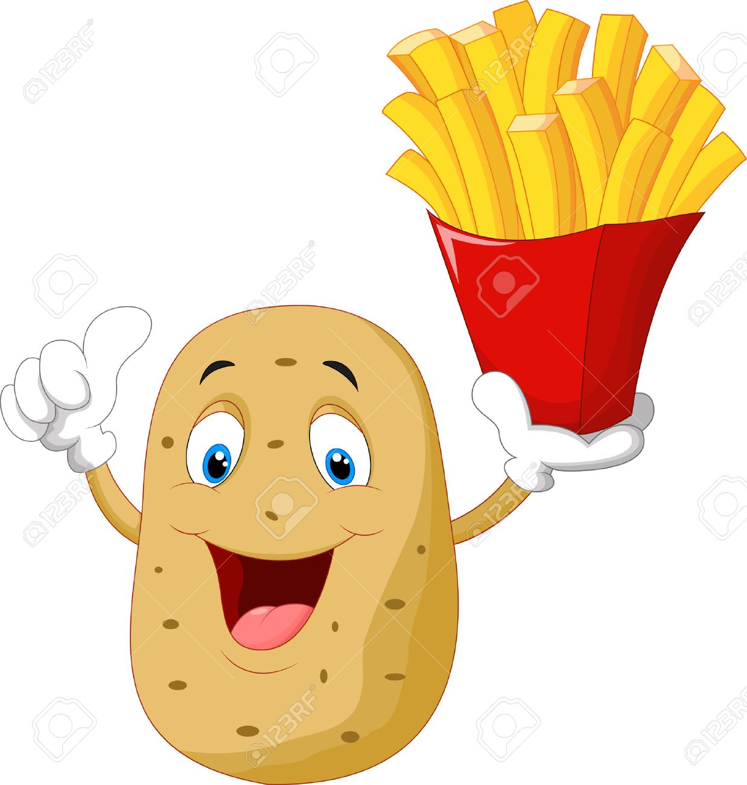

주은총은 감자다?
주은총이 감자인 이유
첫번째 근거로 주은총이 감자인 이유는 일단 주은총의 생김새를 보면 알 수 있다.
주은총의 구릿빛도 아닌 똥색에다가 가래까지 뱉어 놓은듯한 색깔은 마치 감자를 연상캐한다.
그리고 주은총의 머리카락은 굉장히 굵다. 그리고 자세히 보면 갈색빛이 도는것을 확인할 수 있다.
그렇다 그것은 감자를 캘때 나오는 흙이었던 것이다. 이로써 주은총은 감자인것이 증명되었다.
하지만 우리는 여기서 놓지면 안되는것이 하나있다. 흙은 감자를 갓 캐내었을때 확인할 수 있다.
그러므로 주은총은 갓 태어난 감자라는 것을 알 수 있다.

(주은총의 미래의 모습)